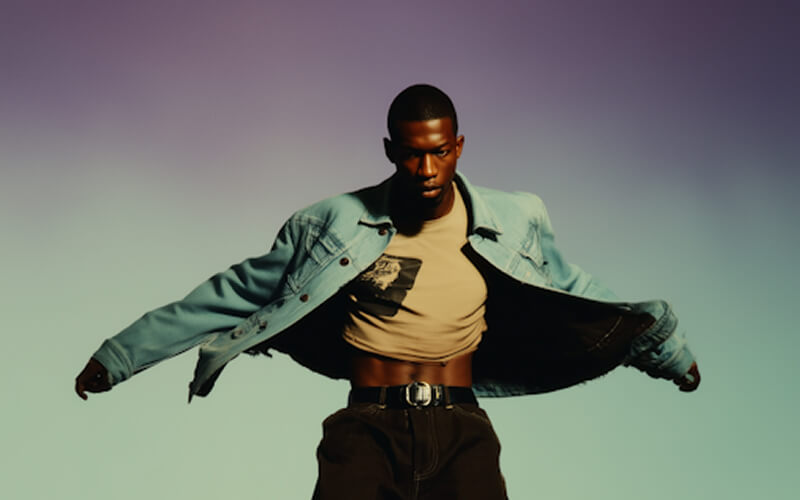
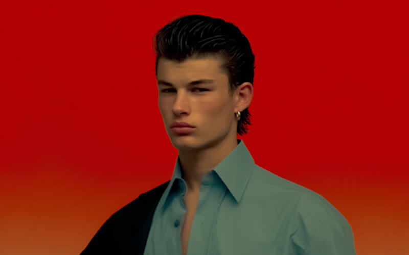

I work in portrait photography with a focus on light, tone, and quiet expression. My approach is patient and intentional.
I try to build images that feel honest, with enough breathing room for personality to settle into the frame.
The final images aim to capture the shift between who they are and become the moment the shutter falls still.



